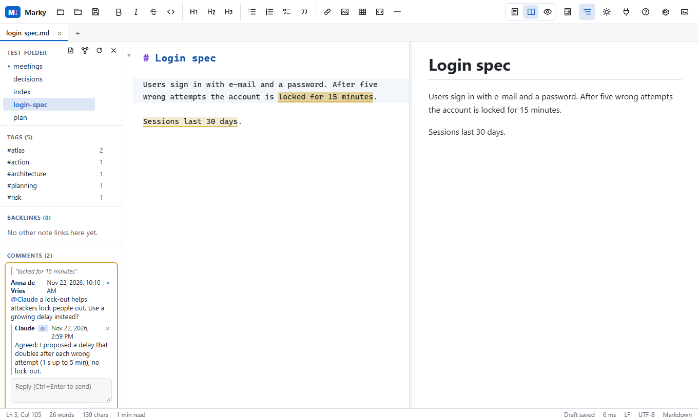

14. AI agents (desktop)
Marky works with the AI coding agents you may already use: Claude Code, OpenAI Codex and Gemini CLI. They run on your computer with your own account; Marky gives them tools to read and search your notes and to propose changes, which you accept or reject.
Starting an agent
Start Claude Code in the terminal (or Start Codex / Start Gemini CLI) opens Marky's terminal (Ctrl+`) with the agent already connected to Marky. Ask it about your notes: summarise what we decided about the database, find notes that contradict each other, write release notes from these changes.
What agents can do
- Read and search the open folder's notes (not encrypted ones), the open tab, and text in pictures (when OCR is on).
- Propose changes: a proposal shows as an inline difference in the note. Accept, Reject, or Keep as suggestions (the agent's changes become suggestions in its name, to review later or hand to someone else).
- Create notes: you see the new note as a proposal; when you accept it, it's written to the folder and opened.
- Read and answer comments: write @Claude in a comment and the agent sees it waiting for it. It makes the change you asked for (as a proposal), replies in the thread and resolves it. Its comments are marked AI.
Agents can't save, change or delete your notes themselves: a change waits for you, and only a new note you accept is written at once. The one thing they write without asking is comments: only in the note's comments file, never in its text, with a notice each time.
Reviewing an agent's work
Review a plan or spec an agent wrote the way you'd review a colleague's: select text, add a comment (Ctrl+Alt+N) and mention @Claude (it's in the list when you type @). The thread shows Waiting for Claude. Then tell Claude Code handle my comments in Marky: it finds every thread that asks it something, in any note of the folder, proposes the changes, answers each thread and resolves it. Reply with another @Claude to go on; a thread without a mention is left to people.

Designing and building an app
Design the app in notes first, then hand it to Claude Code:
- New note from template has an app design kit: App spec, User story, Screen (with mockup), Data model and API endpoint. The spec links to its stories and screens with
[[links]]. - Sketch screens as mockups: type
/mockup, or write HTML in a```mockupblock (```mockup phoneortabletto start at that width). The preview shows it as a real page; the buttons above it switch between desktop, tablet and phone. Claude can write and change mockups too. Mockups can't run scripts or open anything; links inside them only jump to#anchors. - Comment on the spec and the mockups with @Claude wherever you want something changed or answered.
- Build this note with Claude Code asks which project folder to build in, then starts Claude Code there. It reads the spec, its mockups, the linked notes and your open comments, builds the app with its own tools (asking you as usual before it changes files) and answers your comments as it goes. When something is built, it proposes adding the files to the note's
implemented_in:so you can trace a story to its code.

Stories, screens and code (command palette) shows the design notes in the folder: every spec, story, screen, API endpoint and data model, with its status and the code files it lists. A story that's under way or done but lists no code is marked no code listed, and threads waiting for Claude are counted. Click a note to open it; Show filters on what's missing. Desktop: Marky checks that the files exist in the project folder you build in (✓ or ✗); pick a folder with Pick project folder… if it doesn't know one yet. It only looks whether the files are there, it doesn't read them. Claude sees the same overview with its get_traceability tool.

Mockups go into exports too: an HTML file shows the page itself (in a frame that can't do anything), PDF, Word, slides and copies show a picture of it.
Ask your notes
Ask your notes (Ctrl+Shift+L) opens a chat panel beside the note. Ask a question in plain words; Claude answers from your notes and names the ones it used.
The writing assistant
Select text and press Ctrl+Alt+R: improve, shorten, fix spelling and grammar, more formal, more casual, translate, or your own instruction. Also Ask the AI to summarise the note (or selection) and Ask the AI to describe images without alt text. Pick which agent does this in Settings › Features › AI agent.
Privacy
Only what you ask about goes to the AI: the selection for the writing assistant, and what the agent reads with its tools for the others. Encrypted notes are never available to agents.